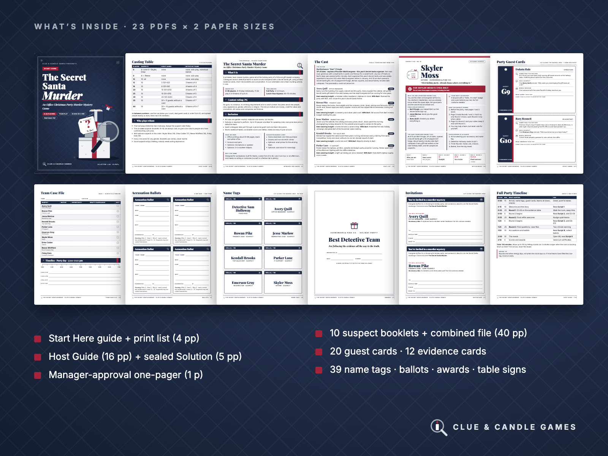
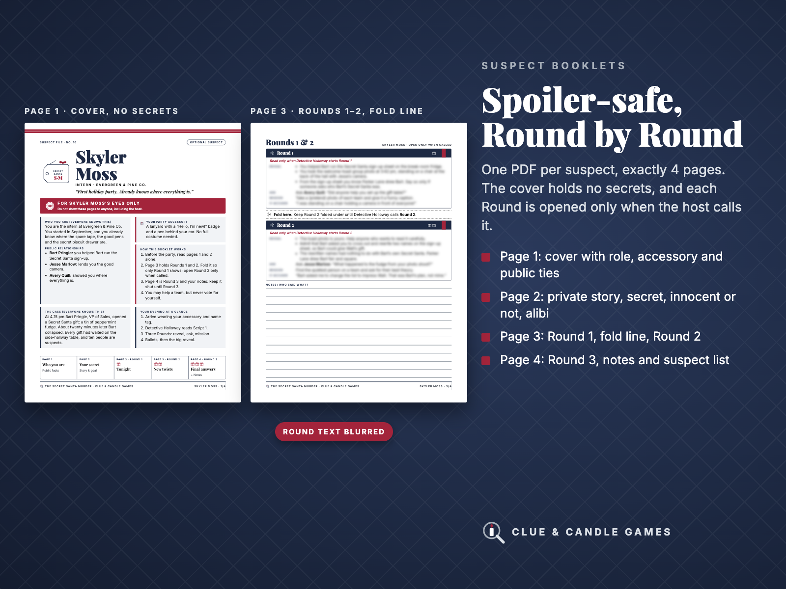
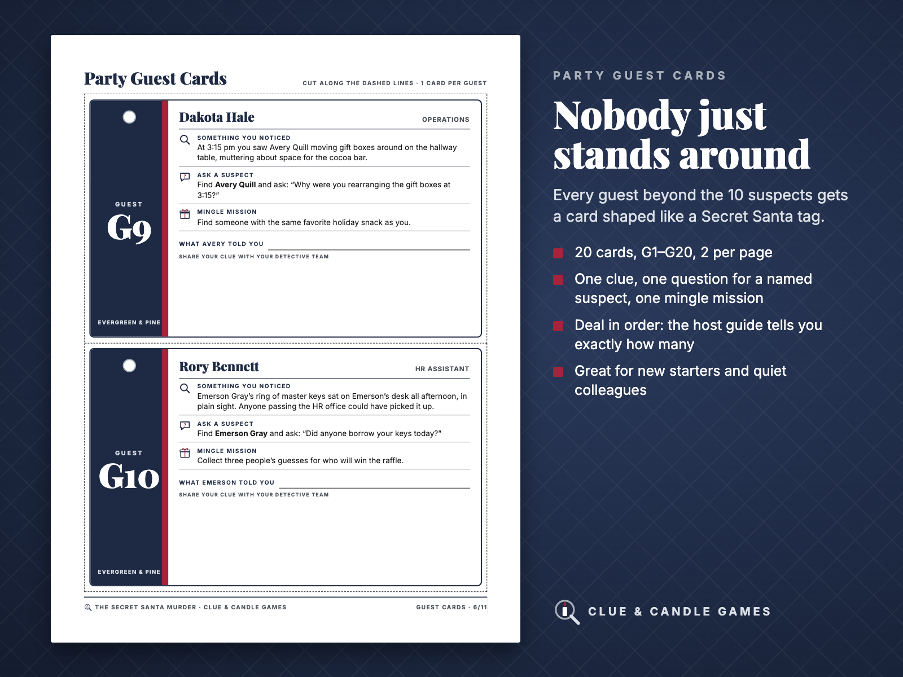
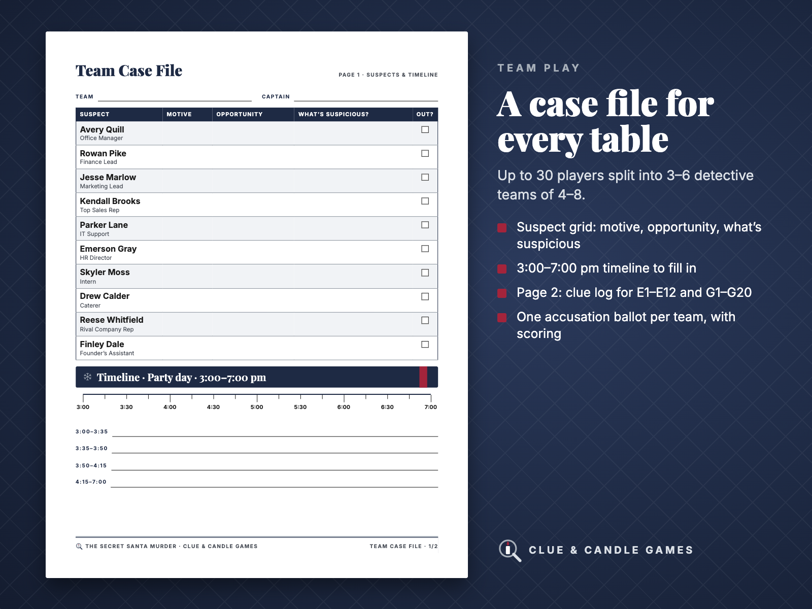
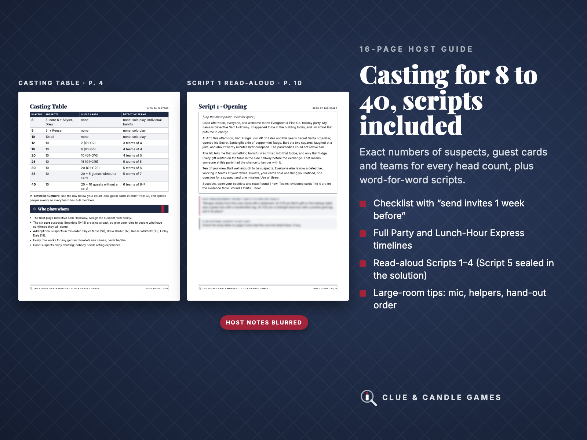
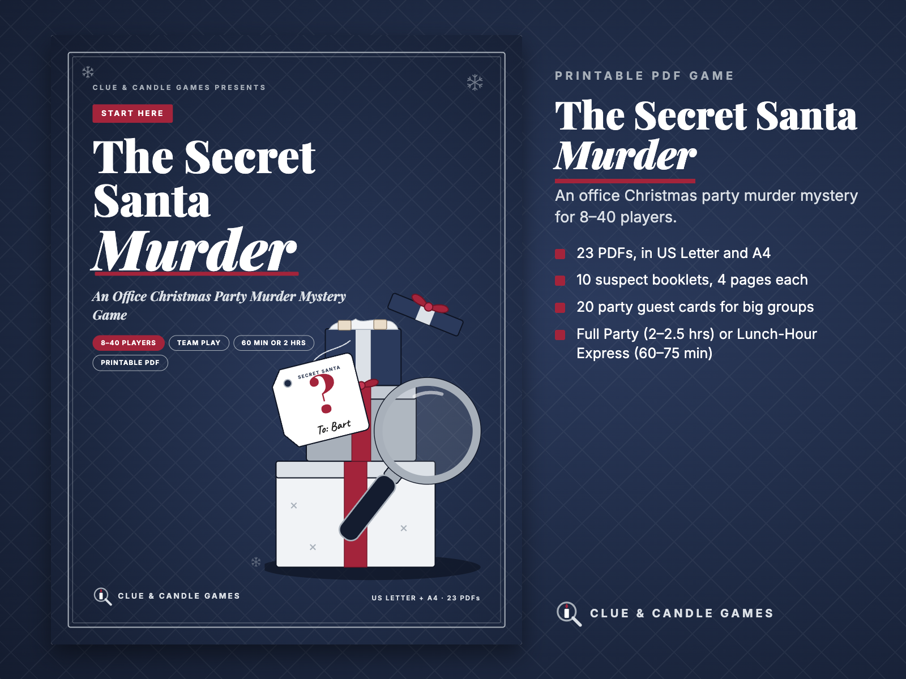

The Secret Santa Murder: Office Party Murder Mystery for 8–40
An office Christmas party murder mystery game for 8–40 players, with team play. It's a cozy, HR-friendly printable mystery where every guest gets something to do. There are 10 suspect roles and 20 party guest cards, and everyone else plays in detective teams. Play the Full Party (2–2.5 hours) or the Lunch-Hour Express (60–75 minutes). From Clue & Candle Games, the party-games imprint of Hustle Studio.
$24.00 USD, one-time, for the whole party (60¢ per person at 40 players)
🔒 Secure checkout. Payment is handled by Waffo Pancake, our merchant of record. You can pay with common methods such as major credit and debit cards. Waffo processes the payment, handles any sales tax or VAT and emails you a receipt you can file with expenses. We never see your card details.
↩️ 14-day no-questions refund. Email us within 14 days of purchase and we'll refund you. You don't need to give a reason.
🎄 Party guarantee: if the party didn't work, you get a full refund. This still applies after you've printed and played it. If the game didn't fit your team, the clues felt unfair or the timing fell apart, tell us within 14 days of purchase and we'll refund you in full.
📥 Instant digital download. Nothing is shipped, and there's no subscription.
What you get: 23 PDFs, in both US Letter and A4
You get one ZIP with two folders, US-Letter/ and A4/. Each holds the same 23 PDFs (145 pages). If you skip the optional combined-booklets file, a paper size comes to 105 pages. You only print what your head count needs: the Start Here guide gives exact counts of 61 pages for 8 players, 76 for 12, 83 for 20, 92 for 30 and 96 for 40. Every PDF can also be downloaded on its own after purchase.
File
Pages
What it is
00 Start Here
4
File guide, player-count and print tables, FAQ
01 Host Guide
16
Checklist, casting table, drop table, team play, two timelines, Scripts 1–4, large-room tips, remote note, snack ideas
02 Manager-Approval One-Pager
1
Group size, timing, content rating, what you need
03 Invitations
7
10 suspect invitations, guest invitation, email + Slack/Teams text
🔒 Secure checkout by Waffo Pancake, our merchant of record. Includes the 14-day refund and party guarantee.
Try before you buy: free mini mystery
The Case of the Cold Cocoa is a free 10-page printable mystery for 4–6 players (about 45 minutes) by the same team, written in the same style. It comes with host scripts, 9 evidence cards, ballots and a solution with its full clue chain, so you can check for yourself whether our clue trails play fair. You don't need an email address or an account.
An honest note: Clue & Candle Games is a new imprint, so there are no reviews or photos from real office parties yet, and we won't invent any. Instead, you can play the free mystery, look at the real pages below and rely on the 14-day refund.
Why office hosts like it
Built for office parties of 8–40 players: 10 gender-neutral suspects plus 20 party guest cards, so big groups play in 3–6 detective teams instead of just watching.
Two ways to play: the Full Party (2–2.5 hours, with a timeline that adds up to 135 minutes) or the Lunch-Hour Express (60–75 minutes, with a timeline that adds up to 70 minutes).
Office-safe, rated PG: there's no gore, no romance, no drinking tasks and no jokes about real people. The motives are money, credit and promotions.
Spoiler-proof printing: every suspect has their own 4-page PDF. The cover is spoiler-free and the secrets are on page 2. Rounds 1 and 2 are split by a fold line, and Round 3 has its own page. The answer is sealed in a separate Solution file.
Manager-approval one-pager included: a single page to send to your boss or HR, covering group size, timing, content rating and what you need.
A fair clue trail: the case is solved in six steps, and each one is backed by evidence cards, guest cards or the public cast list. The Solution lists the steps along with a "why not the others" table.
Flip through the kit
Look inside
These are real pages from the files. The only blurring hides round text in the booklets and host notes that would spoil the case. Your downloaded files have no blurring, and no preview reveals who did it.

What's inside: 23 PDFs × 2 paper sizes

Suspect booklet: cover + Rounds 1–2 (round text blurred)

Party Guest Cards G9 and G10, shown in full

Team Case File, page 1

Host Guide: casting table + Script 1

Start Here guide cover
The story
Evergreen & Pine Co., a family-run gift-basket company, is throwing its holiday party and Secret Santa exchange. At 4:15 pm Bart Pringle, VP of Sales and this year's Secret Santa organizer, opens a tin of peppermint fudge. Twenty minutes later Bart collapses, and the paramedics cannot revive him. During the welcome toast, someone swapped a gift on the hallway table. Your colleagues have until the end of the party to work out who did it, how and why.
The host plays Detective Sam Holloway and reads short scripts, so no acting experience is needed. Up to 10 people volunteer as suspects, and each gets a private 4-page booklet:
Page 1 is a cover with their role, accessory and public relationships. It holds no secrets.
Page 2 holds their private story and secret, whether they are innocent, their alibi and what guests will ask them.
Page 3 has Round 1 on top and Round 2 folded under.
Page 4 has Round 3 plus space for notes.
Each Round is opened only when the host calls it. It gives the suspect things to reveal, a question to ask, a mini mission and a line to say when they're accused.
How team play works
8–10 players: everyone is a suspect and votes individually.
11–30 players: all 10 suspects play, and every other guest gets a party guest card with one clue, one question for a named suspect and one mingle mission. People sit in 3–6 detective teams, and each team gets a Team Case File.
31–40 players: all 20 guest cards are dealt, and extra guests join teams without a card (up to 8 per team).
The Host Guide gives the exact number of suspects, guest cards and teams for 8, 9, 10, 12, 16, 20, 25, 30, 35 and 40 players. It also has a drop table for the four optional suspects, and it lists the four must-deal guest cards with lines to read aloud if they aren't dealt.
Printing: everything prints in black and white on a home or office printer at 100% scale. Cards have dashed cut lines.
Who it's for
Office managers, HR and team leads planning a December party for 8–40 colleagues
Hosts who want everyone involved, including quiet people and new starters
Groups that only have a lunch hour (use the Express version)
Who it's not for
Groups wanting a gory or adult-themed mystery
Fully remote teams: the game is designed for one room, and the Host Guide includes an honest note on adding one remote team
Anyone wanting editable fill-in PDF forms: cards use handwriting lines, and the invitation text is provided for you to copy and paste
Anyone wanting a physical boxed game: this is a digital download, and nothing is shipped
FAQ
Does anyone need to act? No. Suspects read prompts from their booklets, and everyone else chats and compares notes in teams.
Can the host play too? The host runs the game as Detective Holloway. The answer stays sealed in file 99 until the reveal, so the host can try to solve it as well.
What if people cancel? You can drop the four optional suspects without breaking the clue trail, and guest cards are simply dealt in order.
Do the roles work for any gender? Yes. All names are gender-neutral, and the booklets use names, never he or she.
What do I need besides a printer? Scissors and pens. A microphone helps for 20+ players.
Are the clues fair? Is it too hard? The answer can be reached in six steps, and each step points to specific evidence cards, guest cards or the public cast list. The sealed Solution walks through all six. If you'd like to judge our puzzle-writing before buying, play the free Cold Cocoa mystery first.
Does the refund still count after I've printed and played it? Yes. If the party didn't work for your team, email us within 14 days of purchase and we'll refund you in full, even after printing and playing.
Can I pay with a company card and get a receipt? Yes. Waffo Pancake is the merchant of record for this sale. It processes the payment in USD, handles any sales tax or VAT and emails you a receipt. Your card provider converts the price if your card is in another currency. If your finance team needs your company name or address on the receipt, email us and we'll help.
Are there reviews or photos from real office parties? Not yet. The game is new, and we won't invent any. That's why this page shows real pages and a full file list, offers a free mystery to try and includes the 14-day refund.
Who wrote it? It's an original story by Clue & Candle Games. All names and companies are fictional.
Who are you? Clue & Candle Games is the party-games imprint of Hustle Studio, a small independent digital shop. You can email us directly at chenphien@gmail.com, and we reply within 2 business days.
Hosting family too? See A Very Merry Murder, our Christmas mystery for 6–16 players at home.
🔒 Secure checkout by Waffo Pancake (merchant of record). Instant download. 14-day no-questions refund, plus a full refund if the party didn't work. Digital download only; nothing is shipped.